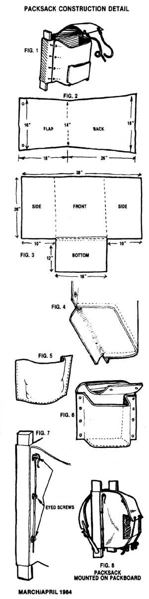

Want more information on crafting your own back-to-basics outdoor gear? Then peruse . . .
In this special section on outdoor equipment, we've tried to present a sampling of some of the many functional, low-cost items you can make at home or-in some cases-on the trail . . . including several types of shelters, a backpack, a candle lantern, a compact cooking stove, a poncho, and a sleep-sack. But even all that, we realize, is only a sampling of the many possibilities open to the do-it-yourselfer. So, MOM's editors have assembled a recommendedreading list . . . a mini-library of homemade backpacking and camping gear know-how.
MOTHER'S HOMESPUN OUTDOOR PROJECTS (AND RELATED TOPICS)
"Make It & Take It" (MOTHER NO. 49, pages 44-46). This three-page article outlines the procedures for making a backpack oven, a fish-filleting board, a fanny pack, a crawfish trap, and boot hangers.
"MOTHER'S Backpack Oven" (MOTHER NO. 64, page 160). A "shorty" article detailing the construction-in minutes-of a zero-to-$3.00 backpack oven.
"Snow Caves and Other Shelters" (MOTHER NO. 78, pages 64-66). There's no need to carry a shelter into snow country when this three-page article tells you how to build snow caves, igloos, and other. winter abodes!
"Making Natural Cordage" (MOTHER NO. 79, pages 38-40). Here, Tom Brown, Jr.-the outdoor survivalist-tells (and shows) you how to make cord for bowstrings, fishing line, snares, lashing, and many other uses. Nature will provide the materials, and the only tools required are your hands.
"Dog Packing" (MOTHER NO. 82, pages 82-85). A detailed guide to fabricating a pooch-pouch that will enable Rover to carry his own supplies on your next outing.
"The Anyone-Can-Make-It Copperhead' Survival Knife" (MOTHER NO. 83, pages 122-124). No expensive shop tools or extensive metalworking knowledge are required for this, knife-from-a-saw-blade project.
"A Dandy Double-Fronted Hunting Vest" (MOTHER NO. 83, pages 182-184). This three-pager includes instructions and pattern guides for a home-sewn, multipocketed hunting vest. (See page 132 for information about ordering back issues.)
DO-IT-YOURSELF BOOKS
Wilderness Gear You Can Make Yourself (Stackpole Books, 1973) by Bradford Angler. A vintage examination of hewing rustic outdoor items from natural materials . . . the ultimate more-with-less approach. The book is out of print, but - as is the case with most of Angier's books - is available in many public libraries in the U.S. and Canada. It's an entertaining read, too!
Make It and Take It: Homemade Gear for Camp and Trail (Pacific Search Press, 1977) by Russ Mohney. Make It is 97 paperback pages in large format (8-1/2" X 11 "), with instructions for homebrewing some 40 projects, each accompanied by well-drawn illustrations and delightful cartoons. The categories include cookware items, fishing gear, seafood traps and nets, hiking and camping equipment, carrying devices, and miscellaneous outdoor goodies . . . plus 11 pages of introductory material. Order it from Pacific Search Press, Dept. TMEN, 222 Dexter Avenue North, Seattle, Washington 98109 . . . for $5.95 plus $1.00 shipping and handling (Washington residents, include state sales tax).
Make Your Own Backpack and other wilderness campgear (Ohio University Press, 1981) by Hugh Nelson. This one is also in large format, paperback, and runs to 131 pages. Make Your Own is illustrated with how-to drawings, and features photos of the completed projects. The book includes instructions for 17 projects, plus sections on tools, techniques, suppliers, kit-makers (this section is, unfortunately, now out of date), and more. You can order it by mail from The Ohio University Press, Dept. TMEN, P.O. Box 1640, Hagerstown, Maryland 21741 . . . for the cover price of $8.95, plus $1.50 postage and handling for the first book, and 25 cents for each additional copy (Ohio and Missouri residents, include state sales tax). Or, if you use one of those little plastic money cards, you can order by phone, toll free, by calling 800/638-3030.
While Taking Care of Outdoor Gear (Stackpole Books, 1983) doesn't tell you how to make your own accoutrements, it nonetheless definitely belongs on this list. The reason is obvious: One of the best ways to avoid having to make, buy, or otherwise procure new outdoor gear is to take proper care of what you already have, thus extending its useful life. And Taking Care goes beyond what its title implies, also offering its readers sound advice on choosing and using equipment wisely. It's brand new, darned good, and suffers only one minor shortcoming . . . it's rather sparsely illustrated. Taking Care of Outdoor Gear was packaged by the editors at Stackpole Books (Dept. TMEN, Cameron and Kelker Streets, P.O. Box 1831, Harrisburg, Pennsylvania 17105), with help from various equipment specialists.
Ranging from air mattresses to wool, the book discusses 53 items dear to the outdoorsperson's heart. Taking Care has 310 pages (in 6" X 9" format), and is available from the address given above for $9.95 in paperback, or $14.95 hardcover (plus 86 cents postage and handling per book).
Or, you can order this one from Mother's Bookshelf (restricted) (105 Stoney Mountain Road, Hendersonville, North Carolina 28791) for $9.95 in paperback, plus $1.25 shipping and handling.
|
 |
|
|